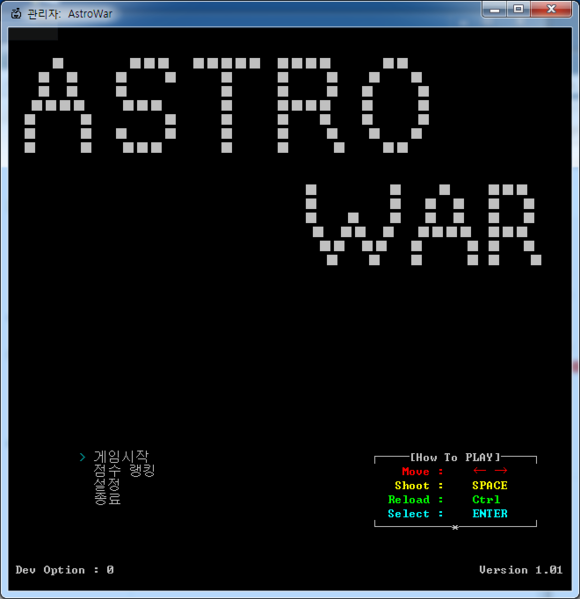
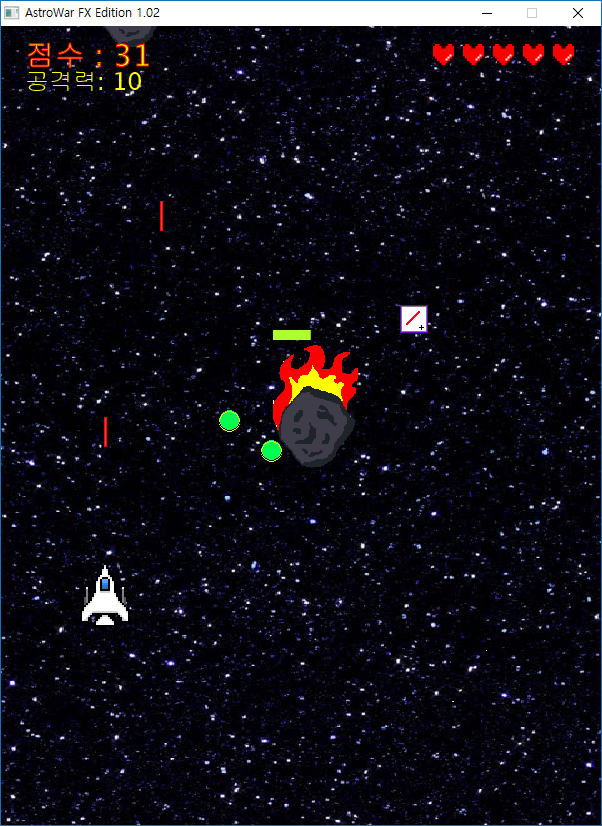
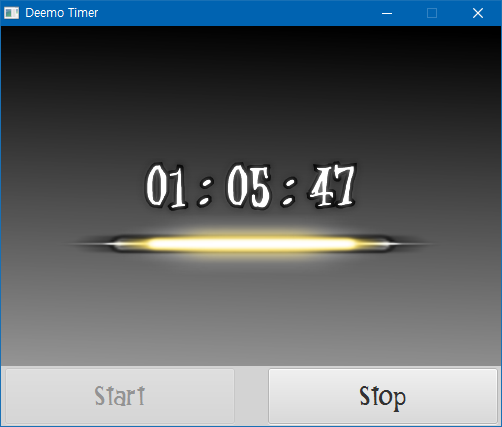
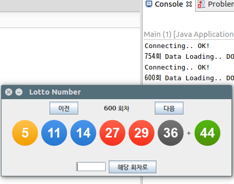
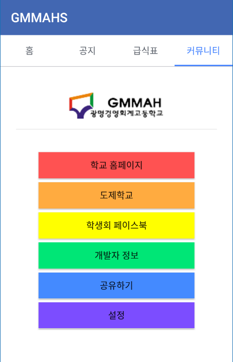
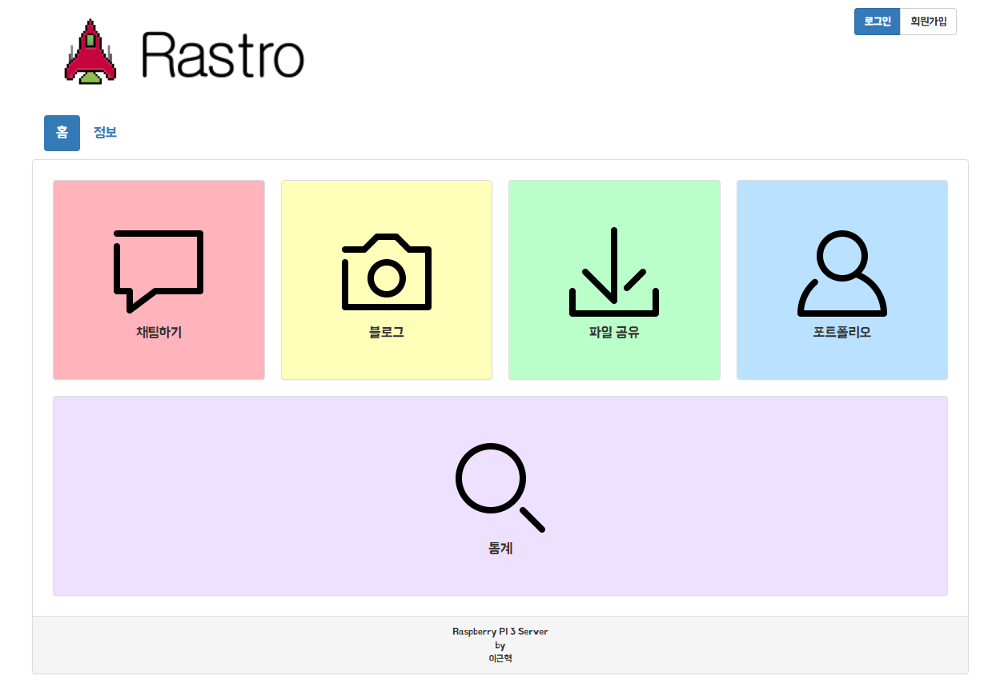

더 자세한 사항은 각 항목의 제목을 눌러주세요
AstroWar C

사용언어: C
1. Win32 API - 콘솔, 이벤트
2. FMOD lib - 사운드
3. File I/O - 저장
AstroWar FX

사용언어: Java
1. JavaFX - GUI
2. MediaPlayer - 사운드
3. Thread - 유연한 동작
4. File I/O - 저장
Deemo Timer

사용언어: Java
1. JavaFX - GUI
2. Thread - 타이머
Lotto Find

사용언어: Java
1. Swing - GUI
2. Thread - 유연한 동작
3. JSoup lib - HTML 파싱
GMMAHS

사용언어: Java(Android)
1. AsyncTask - 네트워크 작업
2. JSoup lib - HTML 파싱
3. RecyclerView - 레이아웃
4. SQLite - 데이터베이스
Rastro

사용언어: 더 보기
자세한 사항은
메인화면 - 정보를 참고하세요